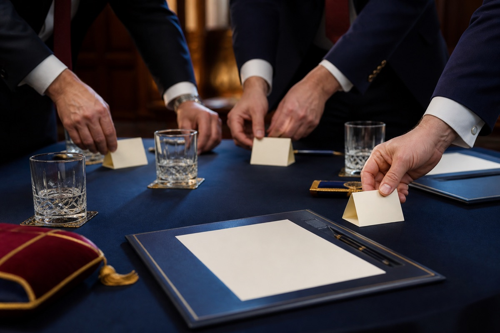
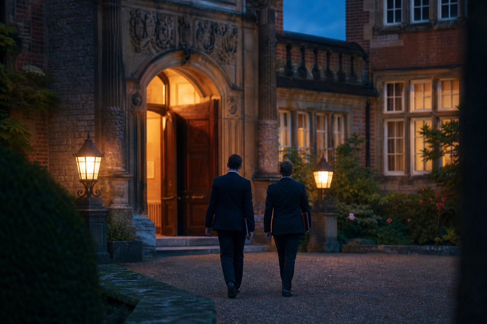

The Surrey 1837 Club
Your first steps in Surrey Freemasonry
Initiates’ Guide
Newly made a Mason in Surrey? Start here for practical answers, local contacts and straightforward ways to take part beyond your own Lodge.
01Freemasonry in General
Language, structure and the wider Masonic journey.
Freemasonry in General
Language, structure and the wider Masonic journey.
What is a Light Blue?
Who the term describes and why it matters to the 1837 Club.
Masonic languageWhat is Dark Blue?
A simple explanation of Provincial and Grand rank.
How Surrey worksThe Provincial system
Where your Lodge, the Province of Surrey and UGLE fit together.
Your future journeyThe Royal Arch
A spoiler-free introduction to Chapter and when to learn more.
Your future journeyCompanion Orders
What the phrase means and why there is no need to rush.
02Freemasonry in Surrey
Places, people and Province-specific routes.
Freemasonry in Surrey
Places, people and Province-specific routes.
Where are the Masonic centres in Surrey?
How to find centres and understand the Province’s spread.
Province explainedWhy can a Surrey Lodge meet outside modern Surrey?
Why Masonic boundaries do not always match today’s county map.
ServiceHow can I get involved in charity and community work?
Start locally, then discover Province-wide opportunities.
03Your Lodge
The people who make meetings and Lodge life work.

Your Lodge
The people who make meetings and Lodge life work.
The different roles within a Lodge
A practical guide to the officers you will meet and who to ask for help.
Your next stepWhat happens after my Initiation?
What to expect between your first and second degree.
LearningWhat am I expected to learn?
A manageable approach to questions, ritual and understanding.
Practical guideWhat should I wear and what regalia do I need?
Follow your summons and ask before buying anything.
MoneyWhat does Freemasonry cost beyond subscriptions?
Dining, charity, travel and the questions to ask your Treasurer.
Before the meetingWhat is a Lodge summons?
How to read the agenda and respond to dining arrangements.
After the meetingWhat happens at the Festive Board?
Dining, speeches, toasts and local Lodge customs.
SupportWhat does my Lodge Mentor do?
How your Mentor can help without directing your journey.
AttendanceWhat if I cannot attend a meeting?
Who to tell and why early notice matters.
PracticeHow do rehearsals and Lodge of Instruction work?
Low-pressure ways to learn and take part.
Looking after one anotherWhat support is available if we need help?
Your Almoner and the wider Masonic support network.
MembershipHow do I propose someone for membership?
Why a thoughtful introduction matters more than speed.
04Visiting
Turn an invitation or calendar listing into a good evening.

Visiting
Turn an invitation or calendar listing into a good evening.
05The 1837 Club
Your Province-wide community of Surrey Light Blues.
The 1837 Club
Your Province-wide community of Surrey Light Blues.
How do you become a member?
Why you may already belong and what it costs.
Get involvedWhat does it do?
Visits, social events, learning and connections across Surrey.
ContactHow do you get in contact?
The community, email and social channels to use.
Wider communityCan partners, family and friends attend events?
Which 1837 activities are designed to include non-Masonic guests.
06Where Can I Learn More?
Trusted resources for a daily advancement in Masonic knowledge.
Where Can I Learn More?
Trusted resources for a daily advancement in Masonic knowledge.
Solomon
How to use UGLE’s learning platform without getting ahead of your degree.
Learn togetherLearning and Development within the 1837 Club
Turn online reading into conversation, visits and shared learning.
Reading listMasonic books
Where to begin and how to avoid unreliable or spoiler-heavy material.
Member servicesHow do I use the UGLE Portal?
What it is for and where it differs from Solomon.
Still unsure?
Ask a Brother, not a search engine
Your Proposer, Seconder, Lodge Mentor or Secretary can explain the custom in your own Lodge. For Surrey-wide help, the 1837 Club can connect you with the right person.